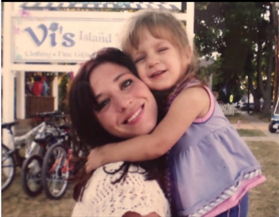

The story behind the girlies
About Us
Giana: A daughter and full time student who has lived with celiac disease for ten years. Growing up gluten free has come with plenty of challenges, especially when it comes to finding places to eat.
Danielle: A mom and business owner who was recently diagnosed with celiac disease herself, and is discovering firsthand the challenges her daughter has faced for years.
We're sharing the places we try, the food we love, and the honest experiences in between.
Our gluten free adventures
Places✳
Less scrolling, more discovering. Find the restaurants we've shared on Instagram, organized by where we've been.
Explore our favorites
Our Places
♡
Nothing here just yet!
Check back as we explore and share more gluten free spots.
Follow the Girlies
Honest reviews, gluten free finds, and everything in between.
Follow @ohioceliacgirlys ↗